第一章異常
程宇是在星期四晚上十一點發現那則廣告的。
他在一間網路廣告公司做數據分析，工作內容說起來很無聊：看使用者在租屋網站上點了什麼，停留多久，什麼時候離開，然後把這些數字變成報告，交給客戶。客戶再用這些報告決定要把廣告放在哪裡。他做了三年，看過幾百萬筆資料，早就對數字麻木了。
可是那天晚上有一筆資料不對。
他在跑一個很普通的分析——租屋網站上刊登超過一年的物件。理論上這種物件不多，房子租不出去的話房東會降價，會換照片，會撤掉重刊。一則廣告掛超過一年，通常是房東忘了，或者已經租出去了但沒撤。
他的程式跑出來一百三十七筆。他一筆一筆看。看到第九十四筆的時候，他停下來。
「台北市中正區，老公寓三樓，兩房一廳，月租八千。」
八千。中正區。兩房一廳。這個價格在二〇二三年的台北，不是便宜，是不可能。
他點進去。刊登日期：二〇一二年六月三日。更新日期：二〇二三年五月十一日，凌晨三點三十三分。
也就是今天。
他往下捲。每一天都有更新。每一天，凌晨三點三十三分，這則廣告被重新刊登一次。從二〇一二年六月三日到今天，四千零三十九天，一天都沒有漏。
他調出刊登者的帳號。帳號名稱是一串數字。註冊日期：二〇一二年六月三日。刊登物件：一筆。其他活動：無。登入紀錄：每天凌晨三點三十三分，登入，更新，登出。用時三十秒。
十一年。
他看著螢幕，看了很久。這種東西他見過——有人寫程式自動刊登，有人用機器人搶曝光。可是那些人通常會刊很多筆，會換內容，會賣東西。這個帳號十一年只做一件事：在每天凌晨三點三十三分，把同一間房子，用同一個價格，再刊登一次。
他點開照片。
一共六張。客廳，兩間房間，廚房，浴室，陽台。老公寓，磨石子地板，木頭窗框，天花板有一點壁癌。很普通。可是有一件事他看了第二次才注意到：六張照片，全部都是雨天拍的。窗戶外面是灰的，玻璃上有水痕，陽台的地板是濕的。
他把六張照片下載下來，放進一個資料夾，資料夾的名字叫「異常」。
然後他關掉電腦，去睡覺。
凌晨三點三十三分，他醒了一次。不知道為什麼。房間裡很黑，很安靜，外面沒有下雨。他躺著，聽了一會兒，又睡著了。
第二章看房
「你瘋了。」阿凱說。
阿凱是程宇的同事，也是大學同學，兩個人在同一間公司做了三年。程宇把那則廣告給他看的時候，他們在公司樓下的便利商店吃午餐。
「八千塊，中正區。」阿凱說，「這一定是詐騙。你打過去，他會叫你先匯訂金。」
「我打過了。」
「然後？」
「一個老太太接的。」程宇說，「她說房子還在，隨時可以看。她說她姓鄭。」
「那就是詐騙集團的老太太。」
「她沒有叫我匯錢。她說看了再說。」
阿凱看著他。程宇知道阿凱在看什麼——他最近的樣子不太好。三個月前他跟交往五年的女朋友分手了，女朋友搬走，他一個人住在原本兩個人租的房子裡，租金付不起，下個月要搬。他在找房子。他找了三個星期，看了十一間，每一間不是太貴就是太爛。
「你不是真的想租吧？」阿凱說。
「我想看看。」程宇說，「就當是工作。一則掛了十一年的廣告，我想知道它後面是什麼。」
✦
那棟公寓在中正區的一條巷子裡，離捷運站走路十分鐘。五層樓，一九六〇年代的建築，外牆貼著那種小小的、褪成米黃色的馬賽克磁磚，一樓是一間已經關門的五金行。
他們到的時候是星期六下午兩點，天很晴。
程宇按了三樓的電鈴。過了很久，對講機裡傳來一個很老的聲音：「來了。」然後樓下的鐵門喀噠一聲開了。
樓梯很暗。每一層的燈都是那種要按開關才亮的，亮三十秒就滅。他們走到三樓的時候，門已經開了，一個老太太站在門口。
七十幾歲，很瘦，頭髮全白，梳得很整齊，穿一件深藍色的外套，外套的扣子扣到最上面。她看著程宇和阿凱，笑了一下。那個笑很淡，可是很溫和。
「程先生？」
「是。這是我朋友。」
「進來看。」她側過身，「不用換鞋，地板是舊的。」
他們走進去。
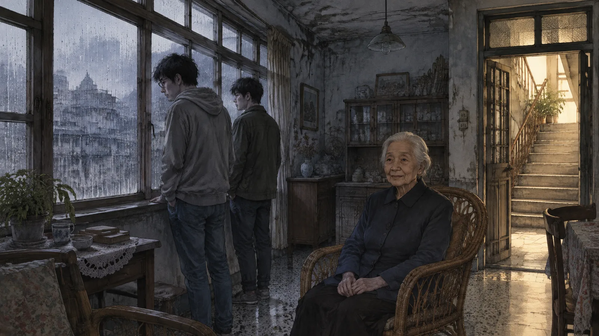
程宇的第一個感覺是：跟照片一模一樣。客廳，磨石子地板，木頭窗框，天花板的壁癌。兩間房間，一間大一間小。廚房是老式的，瓦斯爐，水泥流理台。浴室有一個浴缸。陽台上晾著幾件衣服——不對，他仔細看，那不是衣服，是幾條毛巾。
第二個感覺是：在下雨。
他走到客廳的窗戶邊，往外看。窗外是灰的。玻璃上有水痕。對面公寓的牆是濕的。他聽見雨打在陽台鐵皮上的聲音，不大，很均勻，像一直都在下。
「下雨了？」他說。
「這裡常常下雨。」老太太說，「習慣就好。」
阿凱走到他旁邊，也往外看。他的臉色變了一下。
「我們進來的時候是晴天。」阿凱小聲說。
「台北就是這樣。」老太太在客廳的一張藤椅上坐下來，「一下子晴，一下子雨。」
程宇沒有說話。他看著窗外的雨。雨不大。可是他很確定，他們進來的時候，巷子裡的地是乾的。
他們看了十分鐘。老太太沒有跟著他們，只是坐在藤椅上，兩隻手放在膝蓋上，看著他們。程宇問她房子空多久了，她說很久了。問她為什麼租這麼便宜，她說房子舊，不好租。問她之前有沒有租過別人，她想了一下，說：「有幾個。都搬走了。」
「為什麼搬走？」
老太太看著窗外。
「他們回家了。」她說。
走出公寓的時候，巷子裡的地是乾的。天很晴。程宇回頭看三樓的窗戶，玻璃是乾的，反射著陽光。
阿凱走了幾步，停下來，說：「程宇，我們剛剛在裡面，下雨。」
「我知道。」
「外面沒有下雨。」
「我知道。」
「你還要租嗎？」
程宇沒有回答。他想起老太太說的：他們回家了。
第三章照片
那個星期天，程宇做了一件他很擅長的事：找資料。
網路上的東西不會消失，只會被埋起來。他用網頁時光機把那則廣告從二〇一二年到二〇二三年的每一個版本都調出來——不是每一天都有存檔，可是有一百多個。他把每一個版本的六張照片下載下來，按時間排好，然後一張一張比。
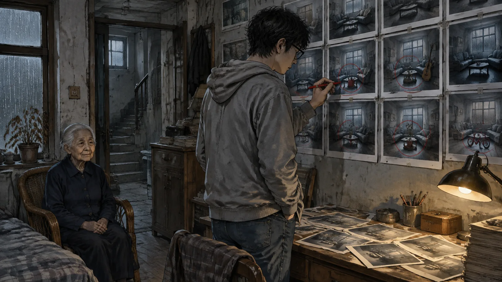
一開始他以為照片沒有變。客廳還是客廳，房間還是房間，都是雨天。
可是他看了兩個小時以後，發現不是。
二〇一二年六月的第一個版本，客廳的照片裡，藤椅旁邊的地上是空的。二〇一三年三月的版本，藤椅旁邊多了一個紅色的水壺。二〇一四年十月，客廳的牆角多了一把吉他，靠在牆上。二〇一五年七月，大房間的照片裡，床邊多了一台筆記型電腦。二〇一六年二月，陽台的照片裡，多了一台小孩的腳踏車。二〇一七年，廚房多了一個電鍋。二〇一八年，浴室多了一條粉紅色的浴巾。二〇一九年，小房間多了一個書架，架上有書。二〇二〇年，客廳的窗台上多了一盆植物，已經枯了。二〇二一年，大房間的門上多了一個掛鉤，掛著一件外套。二〇二二年，玄關的地上多了一雙高跟鞋。
十一年。十一樣東西。
每一樣都是「別人的東西」。不是老太太的——老太太不會有吉他，不會有小孩的腳踏車，不會有高跟鞋。那是房客的東西。是「有幾個」房客留下來的。
他們搬走了，可是東西留下來了。
不對。程宇看著那些照片，忽然覺得冷。不是東西留下來了。是東西「被加進照片裡」了。照片是廣告的一部分。廣告每天凌晨三點三十三分重新刊登一次。每一次刊登，照片就會更新——多一樣東西。
他把二〇二三年五月的最新版本點開，仔細看。客廳的藤椅。紅色水壺。吉他。腳踏車。植物。高跟鞋。
還有一樣他之前沒注意到的。
玄關的鞋櫃是開的。鞋櫃裡，整整齊齊地排著鞋子。他把照片放大。一雙，兩雙，三雙——他數了三次。
十一雙。
他把電腦關掉，坐在黑暗裡。窗外沒有下雨。可是他覺得自己聽到了雨聲，很小，很均勻，像從一個很遠的地方傳過來的。
第四章簽約
他還是租了。
他跟自己說了很多理由。租金便宜。離公司近。他下個月一定要搬，而他找不到別的。他想知道那則廣告後面是什麼，這是他的工作，他是做數據的，他不相信有數據解釋不了的東西。
還有一個理由他沒有跟自己說：他不在乎。
分手以後的三個月，他每天上班，下班，回到那間一半空掉的房子，坐在沙發上，看著她搬走以後留下來的釘子洞。他不太睡，也不太吃。阿凱說他應該去看醫生，他說他沒事。他確實覺得自己沒事。他只是覺得，什麼事發生在他身上都可以。
簽約是在六月一日。梅雨季。那天台北下了一整天的雨。
老太太還是穿那件深藍色的外套，坐在藤椅上，把合約拿給他。合約很簡單，一張紙，手寫的。租金八千，押金一個月，租期一年。房東的名字：鄭秀蘭。
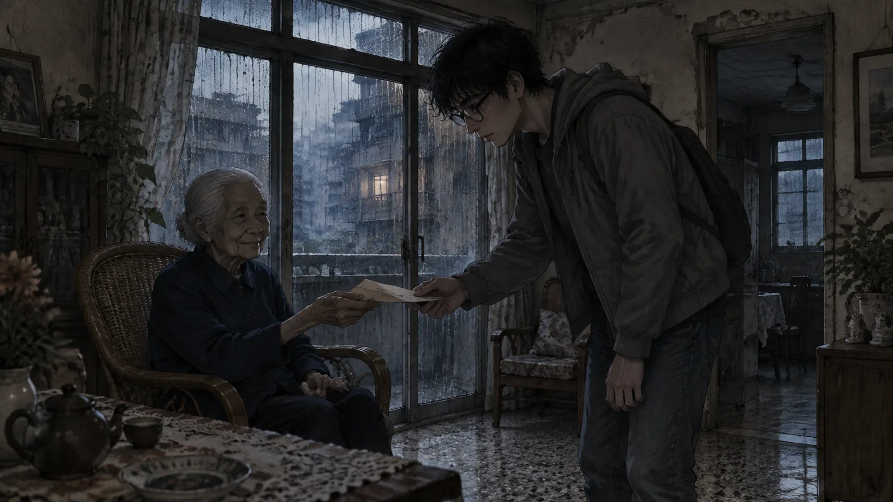
「鄭阿姨，」程宇簽名的時候問，「妳住哪裡？」
「附近。」
「有事的話怎麼找妳？」
「打廣告上的電話。」老太太說，「我都會接。」
程宇把合約簽好，遞給她。她接過去，摺好，放進外套的口袋裡。然後她站起來，走到門口，回頭看了他一眼。
「程先生，」她說，「這個房子，晚上會有一點聲音。是雨。不用理它。」
「好。」
「還有，」她說，「三點半以後不要開門。不管誰敲。」
她走了。程宇聽著她的腳步聲下樓，一階一階，很慢。然後樓下的鐵門關上了。
他一個人站在客廳裡。窗外在下雨。這一次是真的雨，外面的巷子也在下。他走到窗邊，看著雨，忽然想到一件事。
他從來沒有看過鄭阿姨走進這棟公寓。兩次都是她先在裡面。而他也沒有看到她走出去——他只聽到了腳步聲。
他走到門口，打開門，往樓梯間看。
樓梯間是暗的。燈沒有亮。
他關上門。
第五章雨
搬進去的第一個晚上，他聽到了。
不是雨聲。雨聲他已經習慣了——這個房子裡永遠有雨聲，白天晚上都有，外面下不下雨都有。他問過樓下的鄰居，二樓的一對夫妻，他們說沒有聽到什麼雨聲，說三樓「空了二十幾年了，你是第一個搬進去的」。他沒有再問。
他聽到的是別的。
凌晨三點多，他醒了。房間很黑。雨聲在。可是雨聲裡面，有另一個聲音——很輕的，像有人在客廳裡走路。不是走，是站著，然後移動一點點，然後又站著。像一個人在等。
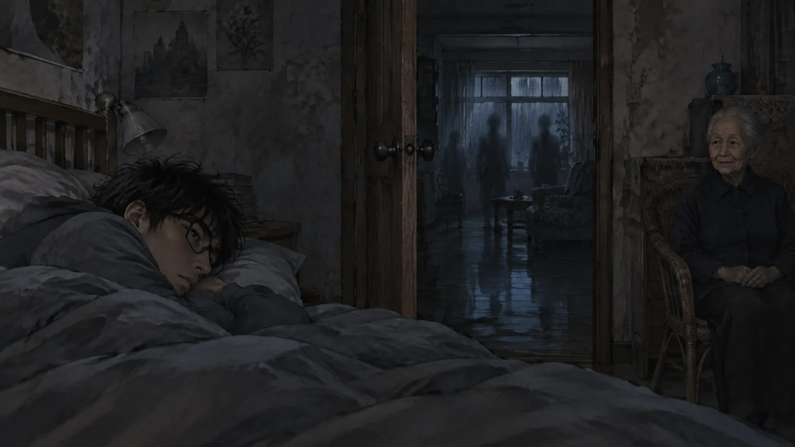
他躺著，沒有動。
那個聲音持續了大概十分鐘。然後停了。雨聲還在。
他看手機：三點四十七分。
第二天晚上也是。第三天也是。都是三點多開始，三點四十幾分結束。他開始在三點半之前就醒著，坐在床上，聽。第四天晚上，他聽出來了：那不是一個人。是好幾個。有的腳步輕，有的重，有的像穿著高跟鞋。他們在客廳裡，站著，移動一點點，站著。
他沒有開門。
第五天，他在客廳的藤椅旁邊發現了一個紅色的水壺。
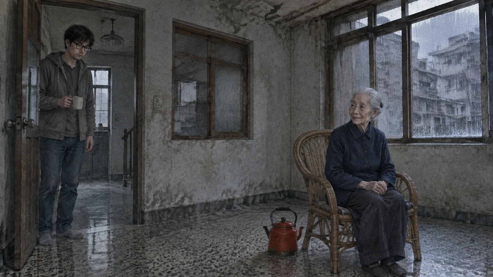
不是他的。他搬進來的時候客廳是空的，除了那張藤椅。他每天早上出門，晚上回來，客廳都是空的。可是那天早上，藤椅旁邊的地上，有一個紅色的水壺，舊的，琺瑯的，把手上有一點鏽。
他認得它。二〇一三年三月，廣告照片裡的第一樣東西。
他站在那裡看了很久。然後他做了一件事：他拿起手機，拍了一張客廳的照片。
照片裡，藤椅旁邊有一個紅色的水壺。
他把照片跟廣告最新版本的客廳照片放在一起比。角度不一樣，光線不一樣。可是水壺的位置一樣。連把手朝的方向都一樣。
他把手機放下，走到廚房，燒了一壺水，泡了一杯咖啡。他坐在藤椅上，看著那個水壺。他想，一個正常人現在應該要搬走。應該要打電話給阿凱，說你說得對，我瘋了，我明天就搬。
可是他坐在那裡，聽著雨聲，喝著咖啡，忽然覺得——這是他三個月來第一次覺得自己在一個「有人」的地方。
第六章十一雙鞋
他開始記錄。
這是他唯一會做的事。他做了一個表格，日期，時間，事件。每天晚上三點多客廳的腳步聲，幾個人，大概走了多久。每天早上多出來的東西。
第五天：紅色水壺。
第八天：吉他。靠在客廳的牆角，弦是鬆的，琴身上有一張褪色的貼紙。
第十一天：筆記型電腦。放在大房間的床邊，打不開，電池已經死了。
第十四天：小孩的腳踏車。在陽台上，輪胎沒氣。
他一樣一樣地記，一樣一樣地跟廣告照片比。順序一模一樣。二〇一三、二〇一四、二〇一五、二〇一六。每三天一樣，像有人在按照一份清單，把十一年的東西一件一件搬進來。
第十七天是電鍋。第二十天是粉紅色的浴巾。第二十三天是書架。第二十六天是那盆枯掉的植物。第二十九天是外套。第三十二天是高跟鞋。
十一樣。三十二天。
第三十三天早上，他打開玄關的鞋櫃。
他從來沒有打開過那個鞋櫃。他搬進來的時候看了一眼，是空的，他就把自己的鞋放在門口的地上。三十三天來他每天經過它，沒有想過要開。
裡面整整齊齊地排著十一雙鞋。
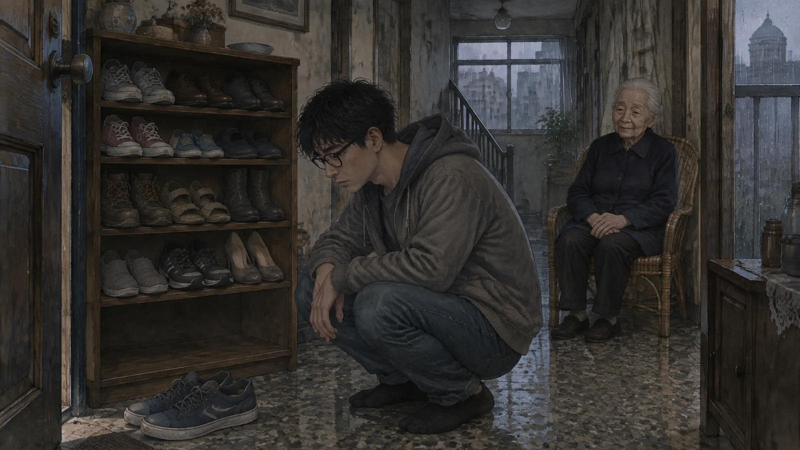
一雙男生的球鞋，很舊。一雙皮鞋。一雙女生的帆布鞋。一雙小孩的鞋。一雙拖鞋。一雙登山鞋。一雙涼鞋。一雙皮靴。一雙布鞋。一雙運動鞋。一雙高跟鞋——不對，高跟鞋在玄關的地上，鞋櫃裡的是另一雙。
他站在鞋櫃前面，一雙一雙地看。每一雙都有穿過的痕跡，鞋底磨損的地方不一樣，鞋帶綁的方式不一樣。都是真的鞋。都是真的人穿過的。
他蹲下來。在鞋櫃的最下面一格，還有一個空位。剛好可以放一雙鞋。
他回頭看門口的地上。他自己的球鞋放在那裡，藍色的，穿了兩年。
他拿起手機，打開廣告，看最新版本的照片。玄關那一張。鞋櫃是開的。裡面有十一雙鞋。最下面一格——
是空的。
他把照片放大，再放大。最下面一格是空的。可是空格的旁邊，在磨石子地板上，有一個很淡的、藍色的影子。像一雙鞋子的影子。像一雙藍色球鞋，快要被放進去了。
第七章阿凱
阿凱是在第三十四天來的。
程宇沒有叫他來。是阿凱自己來的，因為程宇已經一個星期沒有回他的訊息了。他在下午五點按電鈴，程宇開門，看到他站在樓梯間，手裡提著一袋便利商店的東西，臉上是那種「我來看看你是不是還活著」的表情。
「你看起來很糟。」阿凱說。
「我知道。」
阿凱走進來，站在客廳裡，看了一圈。藤椅。紅色水壺。吉他。腳踏車在陽台上。書架。枯掉的植物。高跟鞋。
「這些是誰的？」
「不是我的。」
阿凱看著他。程宇把電腦打開，把那個表格給他看。日期，時間，事件。三十三天，十一樣東西，每一樣旁邊都貼著廣告照片的截圖，圈起來，標著年份。然後他把鞋櫃打開。
阿凱看著那十一雙鞋，看了很久。他的臉色越來越白。
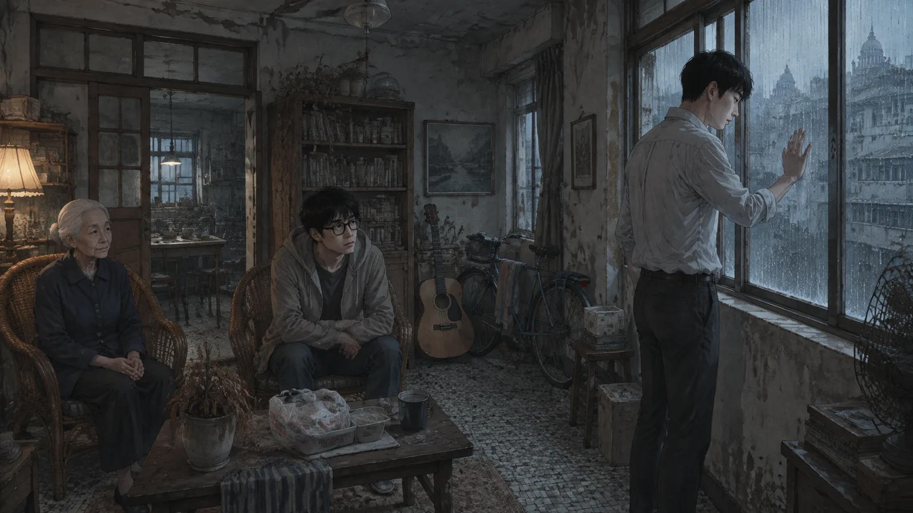
「你要搬走。」他說，「現在。跟我走。」
「我不能。」
「為什麼不能？」
程宇不知道怎麼回答。他坐在藤椅上，聽著雨聲。阿凱也聽到了——他看到阿凱的頭轉向窗戶，看到他走過去，看到他把手貼在玻璃上。
「外面沒有下雨。」阿凱說。
「我知道。」
「可是我聽到雨聲。」
「我知道。」
阿凱轉過身，看著他。「程宇，你聽我說。我不管這個房子是什麼。我不管那些鞋子是誰的。你已經一個月沒有好好睡覺了，你看起來像一個鬼。你分手了，你很難過，我懂。可是你不能因為這樣就住在一個——一個這種地方。」
「阿凱，」程宇說，「你知道我這一個月，是這三年來睡得最好的一個月嗎？」
阿凱愣住了。
「我每天晚上三點半醒來，聽他們在客廳裡走，然後他們走了，我就睡了。我睡得很好。」程宇說，「我不知道為什麼。可能是因為，這是我第一次覺得，有人在等我。不是等我做什麼，不是等我變好，只是等。」
「他們不是在等你。」阿凱說，「他們是在等一個叫阿誠的人。你不是。」
「我知道。」程宇說，「所以我要找到他。」
阿凱在客廳裡站了很久。然後他把那袋便利商店的東西放在桌上——是幾個飯糰，幾罐咖啡，一包泡麵——然後他走到門口，回頭。
「三天。」他說，「三天以後你沒有搬出來，我報警。我不管他們信不信。」
「好。」
阿凱走了。程宇聽著他的腳步聲下樓。然後他的手機響了。
不是阿凱。是她。分手三個月，第一次。
他看著螢幕上的名字，看了四聲鈴響，接了。
「喂。」
「程宇。」她的聲音，跟以前一樣，「你還好嗎？阿凱跟我說你搬家了。」
「還好。」
「你住哪裡？」
「中正區。老公寓。」
「一個人？」
程宇看著客廳。藤椅。十一樣東西。鞋櫃。他忽然很想說一句話——那句話在他嘴邊，像從很深的地方浮上來的：我想回家。回我們以前的家。回妳還在的那個家。
他張開嘴。
雨聲忽然變大了。不是外面的，是裡面的。客廳裡的雨聲，一下子變得很大，像整個房間都在下雨。他聽到鞋櫃裡有東西動了一下。
他把嘴閉上。
「程宇？」
「沒事。」他說，「我很好。妳呢？」
他們講了十分鐘。天氣，工作，她的貓。然後她說她要掛了。他說好。
他掛掉電話，坐在藤椅上，全身都是汗。雨聲慢慢地小了，回到原本的樣子，均勻的，不大的。
他知道剛剛差一點。
他知道那句話如果說出來，會發生什麼事。
他打開表格，在最後一行寫：「第三十四天。差點。」
第八章房客
他請了三天假。
他跟公司說家裡有事。阿凱打電話來，他說他沒事，只是累。阿凱說你搬出來，我這裡可以睡沙發。他說再看看。
他要找那十一個人。
他有東西可以找。吉他上的貼紙，褪色了，可是還看得出來是一間樂器行的貼紙，中山北路的。筆記型電腦的背面貼著一張學生證的影本，撕掉一半，剩下的部分寫著一個大學的名字和一個姓：林。小孩的腳踏車上用麥克筆寫著「小恩」。書架上的書有幾本是圖書館的，蓋著一間國中圖書室的章。外套的內裡繡著一個名字：陳淑芬。
他從最容易的開始。那個姓林的大學生。
大學的學生證，二〇一五年。他找到那間大學的校友系統，用「林」和「二〇一五」查了一個下午，找到三十七個。他一個一個找，找他們現在在哪裡。三十六個都有——臉書，領英，公司網站，總之是活著的人。第三十七個沒有。
林柏翰。二〇一五年七月，大三。之後沒有任何紀錄。沒有畢業，沒有工作，沒有社群帳號。像一個人在二〇一五年七月從所有的資料庫裡消失了。
程宇找到他的家人。
不容易。他用了一些他知道但不太應該用的方法。最後找到的是一個電話號碼，新竹的，登記在一個姓林的女人名下。他打了。
「請問是林柏翰的家人嗎？」
電話那頭安靜了很久。
「你是誰？」一個女人的聲音，很累。
「我——我是他大學的學弟。我在整理系上的資料，想確認一下他的聯絡方式。」
「他不在了。」
「不在了？」
「他回家了。」女人說，「二〇一五年七月。他打電話給我，說他要回家。然後就沒有了。」
「沒有了？」
「他沒有回來。」女人的聲音開始抖，「他說他要回家，可是他沒有回來。警察找了一年。沒有。什麼都沒有。他住的地方——台北一間老公寓——房東說他退租了，東西都搬走了。可是他沒有回家。」
程宇握著電話，看著客廳牆角的那把吉他。
「阿姨，」他說，「他住的那間公寓，是不是在中正區？三樓？」
電話那頭沒有聲音。
然後，很小很小的一聲：「你怎麼知道？」
程宇掛了電話。他坐在藤椅上，聽著雨聲。他想起老太太說的：他們回家了。
他們沒有回家。他們只是說了要回家。然後他們就在這裡了。在照片裡，在鞋櫃裡，在凌晨三點多的客廳裡，站著，移動一點點，站著。
在等。
等什麼？
第九章鄭阿姨
第二天，他去了戶政事務所。
他想查這間房子的所有權人。這需要一些程序，他花了一個上午。結果出來的時候，他坐在戶政事務所的塑膠椅上，看著那張紙，看了很久。
所有權人：鄭秀蘭。取得日期：一九七〇年。
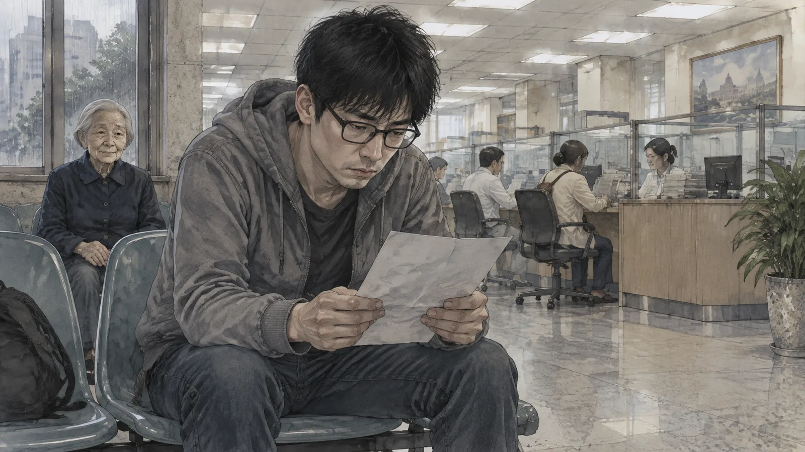
死亡註記：二〇一二年五月三十日。
二〇一二年五月三十日。廣告是二〇一二年六月三日開始刊登的。四天。
他走出戶政事務所，站在馬路邊。天很晴。他想起那個穿深藍色外套的老太太，坐在藤椅上，兩隻手放在膝蓋上。想起她說「我都會接」。想起他從來沒有看過她走進那棟公寓，也沒有看過她走出去。
他拿出手機，撥了廣告上的電話。
響了三聲。
「來了。」老太太的聲音。
程宇握著手機，站在大太陽底下，說不出話來。
「程先生？」老太太說，「有事嗎？」
「鄭阿姨，」他終於說，「妳在哪裡？」
「在家。」
「哪個家？」
電話那頭安靜了一會兒。然後老太太說，聲音很輕，很溫和，跟第一次見面的時候一模一樣：
「等人的地方，就是家。」
她掛了。
✦
他沒有回公寓。他去了圖書館。
他在想一件事：鄭秀蘭死於二〇一二年，廣告從二〇一二年開始。可是她「等人」，一定不是從二〇一二年開始的。一個人不會在死掉的那一天才開始等。她一定等了很久。而在網路廣告之前，一個等人的老太太，會用什麼方法等？
報紙的分類廣告。
台北市立圖書館有舊報紙的微縮片。他從二〇一二年往前找。分類廣告很小，一則只有兩三行，一頁有幾百則。他找「鄭」，找「中正區」，找「三樓」。
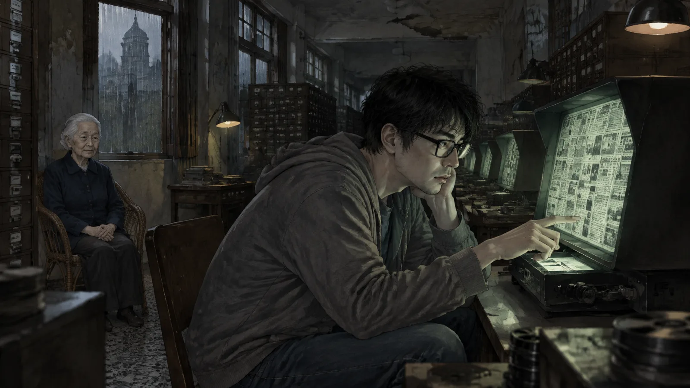
他找了一整天。
晚上七點，他在二〇一一年三月的一份報紙上找到了。分類廣告的「尋人」欄，最下面一則，兩行字：
「阿誠：媽在家等你。雨停了就回來。中正區老家三樓。」
他往前找。二〇一〇年，有。二〇〇九年，有。每個月一次，同樣的兩行字。二〇〇五年，有。二〇〇〇年，有。
一九九八年九月。第一則。
「阿誠：媽在家等你。雨停了就回來。」
一九九八年。二十五年。從報紙到網路。從「尋人」到「租屋」。一個母親等一個叫阿誠的人，等了十四年，然後死了，然後繼續等了十一年。
而那些「回家」的房客——林柏翰，陳淑芬，小恩，還有另外八個——他們是什麼？
程宇坐在微縮片閱讀機前面，看著那兩行字。他忽然明白了。
他們不是被抓走的。他們是「被當成阿誠」的。他們住進那間房子，他們在某一個雨夜說了「我要回家」，然後那間房子——那個等了二十五年的東西——聽到了。它以為是阿誠回來了。它把他們留下來。
十一個。
它留了十一個人，可是沒有一個是阿誠。所以它繼續等。所以廣告繼續刊。所以鞋櫃裡還有一個空位。
第十章敲門
那天晚上下了很大的雨。
真的雨，外面也在下，颱風外圍環流，氣象局說會下到明天中午。程宇回到公寓的時候全身濕透，他在浴室裡站了很久，看著那條粉紅色的浴巾，沒有用它，用自己的。
他沒有睡。他坐在客廳的藤椅上，開著燈，等三點半。
他不知道自己在等什麼。他只知道，他已經在這裡三十五天了，鞋櫃裡有一個空位，廣告照片裡有一雙藍色球鞋的影子。他知道如果他什麼都不做，某一天晚上他會在雨聲裡說出那句話——「我要回家」——然後他就會在鞋櫃裡了。
三點三十三分，他聽到了腳步聲。
不是在客廳裡。是在門外。樓梯間。
一階一階，很慢，很多人。他聽到高跟鞋的聲音，聽到小孩的腳步，聽到有人拖著一台腳踏車上樓的聲音。他們走到三樓，停在門口。
然後有人敲門。
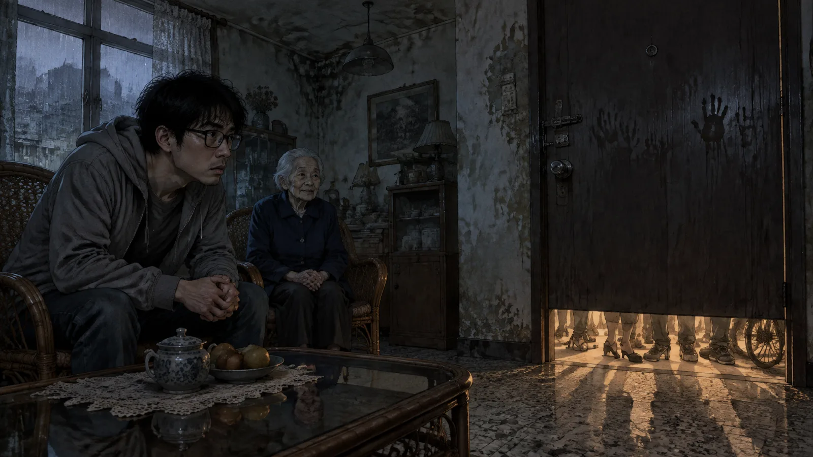
不是用力敲。是很輕的，三下。停一下。三下。
程宇坐在藤椅上，沒有動。老太太說過：三點半以後不要開門。不管誰敲。
三下。停一下。三下。
然後他聽到了聲音。門外的聲音。很多個聲音，重疊在一起，很小，像從很深的水底傳上來：
「開門。」
「我回來了。」
「媽，開門。」
「雨停了。」
「我回來了。」
「開門。」
程宇把手按在藤椅的扶手上。他的手在抖。他看著門，看著門縫下面透進來的樓梯間的光——燈是亮的，這是他搬進來以後第一次看到樓梯間的燈亮著——看著那道光裡的影子。很多影子，擠在門口，站著，移動一點點，站著。
「開門。」
「我是阿誠。」
「我回來了。」
他們每一個人都在說自己是阿誠。
程宇忽然懂了。他們不是在等。他們是在試。他們被留下來以後，每天晚上三點三十三分，來敲這扇門，說「我回來了」，希望這一次門會開，希望這一次那個等的人會說「你回來了」，然後他們就可以走了。
可是門不會開。因為他們不是阿誠。
他坐在那裡，聽著他們敲門，聽著他們說話。三點四十七分，聲音停了。腳步聲下樓，一階一階，很慢。樓梯間的燈滅了。
雨還在下。
程宇站起來，走到門口，把耳朵貼在門上。什麼都沒有。他蹲下來，看門縫。
門縫下面，有一張紙。
他抽出來。是一張很舊的、摺了很多次的紙，是一封信的一部分，只有半頁。上面是原子筆的字，很潦草，像一個年輕人寫的：
「……我不會回來了。妳每次都說雨停了就回來，可是台北的雨從來不會停。我要去一個不下雨的地方。不要等我。——阿誠 一九九八年九月」
第十一章五金行
一樓的五金行已經關了十幾年。
可是老闆還住在後面。程宇是在第二天早上敲他門的——他從花蓮回來之前，還有一件事想確認。那個老闆姓周，八十幾歲，坐在一張輪椅上，聽力不太好，可是眼睛很亮。他聽到程宇說「三樓」，眼睛就更亮了。
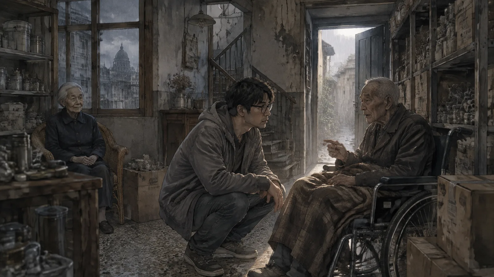
「三樓喔。」他說，「鄭太太。」
「你認識她？」
「一九七〇年就認識了。她跟她先生搬進來的時候，我這間店剛開。」周老闆說，「她先生是個好人，就是愛喝。喝了就吵，吵了就走，走了就回來。每次回來鄭太太都在門口等。等到後來，就變成習慣了。」
「她先生後來——」
「一九九六年。颱風天，喝醉了，跌進巷口的水溝。」周老闆說，「隔天早上才發現。鄭太太在門口等了一整夜，雨很大，她撐一把傘站在那裡。她以為他又出去喝了，會回來。」
程宇沒有說話。
「然後就是阿誠。」周老闆說，「那個孩子跟他爸長得很像。一九九八年，也是颱風，他跟他媽吵架，半夜走出去。我聽到他在樓梯間喊：我不會回來了，我不像他。然後鐵門一甩。」
「鄭太太呢？」
「她又站在門口等。」周老闆說，「這次沒有撐傘。她站到天亮，然後她上樓，然後——」他停了一下，「然後她就沒有再下來過了。」
「什麼意思？」
「她沒有再出過門。二十五年。我每天送菜上去，放在門口。她在門口放錢。我沒有再看過她的臉。」周老闆說，「三樓的窗戶，每天晚上都亮著。我以為她在等阿誠。後來我想，可能她在等她先生，也可能是兩個一起等。等的人多了，就分不清楚了。」
「她二〇一二年過世的。」
「對。是我發現的。菜在門口放了三天沒有人拿。」周老闆看著程宇，「小夥子，你住三樓多久了？」
「一個多月。」
「有沒有聽到雨聲？」
程宇點點頭。
「二十五年了。」周老闆說，「從阿誠走的那天晚上開始，三樓就一直在下雨。我聾了，可是我聽得到。每天晚上。有時候我想，她說雨停了就回來——她不是在等雨停。她是在等有人回來，雨才會停。」
程宇站在五金行的後門口，看著這個八十幾歲的、坐在輪椅上的老人。
「周伯，」他說，「那些房客——那十一個——你知道他們去哪裡了嗎？」
周老闆搖搖頭。
「我只知道他們搬進去，然後有一天沒有再下來。」他說，「跟鄭太太一樣。」
他頓了一下。
「你會下來嗎？」
程宇沒有回答。他說了謝謝，走出五金行，走到巷口，看著那條水溝。水溝很淺，蓋著鐵蓋。他想像一個喝醉的男人在颱風夜跌進去，想像一個女人撐著傘在門口站了一整夜，想像一個十八歲的男孩甩上鐵門，喊：我不像他。
他想，每個人都在等一個人回來。可是回來的從來不是那個人。
然後他去搭車，去花蓮。
第十二章阿誠
他找到了阿誠。
比他想的容易。鄭秀蘭的戶籍資料上有一個兒子，鄭志誠，一九七〇年生。一九九八年遷出，遷到花蓮。之後沒有再遷。
程宇搭了三個小時的火車。
花蓮的天很藍。他一下車就注意到了：這裡沒有雨。太陽很大，山很近，空氣很乾。他想起那封信：我要去一個不下雨的地方。
鄭志誠住在花蓮市郊的一間平房，門口種著幾棵芭樂樹。程宇到的時候他正在澆水。五十三歲，曬得很黑，頭髮已經有一半白了，穿一件汗衫。他看到程宇站在門口，把水管關掉。
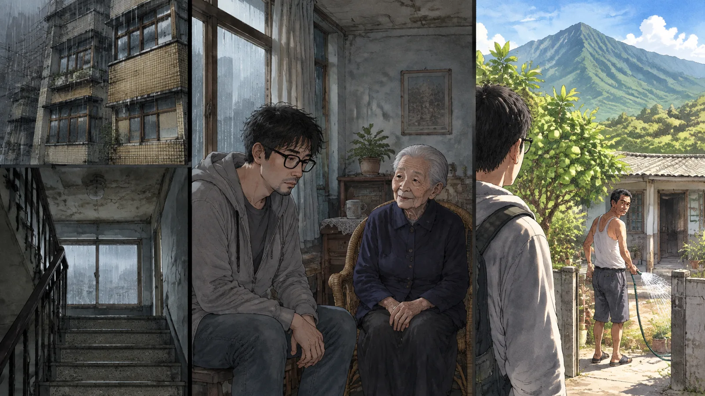
「找誰？」
「鄭志誠先生？」
「我是。」
「我是台北來的。」程宇說，「我住在你媽媽的房子裡。」
鄭志誠的臉變了一下。很細微。然後他把水管放下，走過來，站在門口，看著程宇。
「我媽死了。二〇一二年。」
「我知道。」
「那你住那裡幹嘛？」
程宇把那半頁信拿出來，遞給他。鄭志誠看了一眼，沒有接。
「這是我寫的。」他說，「二十五年前。」
「我知道。」
「你要幹嘛？」
程宇不知道要怎麼說。他站在花蓮的太陽底下，看著這個五十三歲的、離開了二十五年的、住在一個不下雨的地方的男人，忽然覺得很累。
「你媽媽等了你二十五年。」他說，「她死了以後還在等。她在報紙上登廣告，登了十四年。她死了以後，廣告變成租屋廣告，每天凌晨三點三十三分登一次。有十一個人住進那間房子，他們都不見了。他們每天晚上來敲門，說自己是你。」
鄭志誠看著他。
「你是不是有病？」
「可能。」程宇說，「可是那間房子裡一直在下雨。二十五年了。她說雨停了就回來。雨沒有停過。」
鄭志誠沉默了很久。他的手放在門框上，手指很粗，指甲裡有泥。
「我不會回去。」他終於說，「我十八歲那年跟她吵架，她說我沒有出息，說我跟我爸一樣。我爸是酒鬼，死在台北的一場雨裡，喝醉了跌進水溝。她說我跟他一樣。我說我不會回來了。我走了。我在這裡活了二十五年，沒有下過幾天雨。我不會回去。」
「她死了。」
「我知道她死了。有人通知我。我沒有回去。」鄭志誠說，「你知道為什麼嗎？因為我怕。我怕我回去了，她還在那裡，還在等，還在說雨停了就回來。我怕我一輩子都走不出那間房子。」
他轉過身，走回院子裡，拿起水管，繼續澆水。
「你走吧。」他說，「那間房子的事，跟我沒有關係。」
程宇站在門口。他看著鄭志誠的背影，看著他手裡的水，看著芭樂樹的葉子在陽光下發亮。他忽然想起自己的父親——他很少想起他，父親在他十歲的時候走了，也是走了，不是死了。他母親也等過，等了幾年，然後不等了。他記得她不等了的那一天，她把父親的照片收起來，說：「好了，我們自己過。」
他記得那天是晴天。
「鄭先生，」他說，「你不用回去。」
鄭志誠沒有回頭。
「可是有人要回去。」程宇說，「不然那十一個人，走不了。」
第十三章回家
他是在三點二十分回到公寓的。
從花蓮回來的最後一班車，到台北十一點多，他在車站坐了很久，然後走回來，走了一個多小時。雨還在下。真的雨。颱風還沒走。
他走上三樓，開門，進去。客廳的燈是亮的，他出門的時候沒有關。藤椅。紅色水壺。吉他。十一樣東西。鞋櫃開著，十一雙鞋，一個空位。
他把自己的藍色球鞋脫下來。
他站在玄關，拿著鞋，看著那個空位。他想，一個正常人現在應該要跑。應該要拿著鞋衝出去，再也不回來。廣告會繼續登，鞋櫃會繼續空，可是那是別人的事。
可是他想起林柏翰的媽媽在電話裡的聲音。想起那些聲音：開門，我回來了，媽，開門。想起鄭志誠說：我怕我一輩子都走不出那間房子。
他想起他自己的母親說：好了，我們自己過。
他把鞋放進鞋櫃的空位裡。
然後他走到客廳，在藤椅上坐下來，拿出手機，看著時間。
三點三十一分。三點三十二分。
三點三十三分，他撥了廣告上的電話。
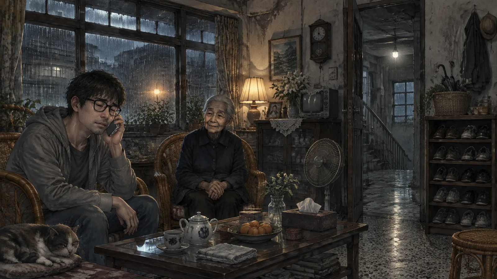
響了三聲。
「來了。」老太太的聲音。
「鄭阿姨。」程宇說。
「程先生？」
「不是。」程宇說。他的聲音在抖，可是他讓它抖，「媽。」
電話那頭安靜了。雨聲在。客廳裡的，電話裡的，外面的，全部疊在一起。
「媽，」他說，「我回來了。」
很久很久，沒有聲音。然後老太太說，聲音很輕，輕到幾乎聽不見：
「阿誠？」
「是。」
「雨停了？」
程宇看著窗戶。窗外還在下雨，颱風的雨，很大。他閉上眼睛。
「停了。」他說，「媽，雨停了。我回來了。妳不用等了。」
電話那頭沒有聲音。他聽著，聽了很久。然後他聽到一個很小的聲音，像一個人吐了一口很長很長的氣。像一個等了二十五年的人，終於把肩膀放下來。
「好。」老太太說，「回來就好。」
電話斷了。
程宇坐在藤椅上，手機放在膝蓋上。他聽著。
雨聲停了。
不是外面的——外面還在下，颱風的雨打在陽台的鐵皮上。是裡面的。那個二十五年來一直在這間房子裡下的雨，那個不管外面晴不晴都在下的雨，停了。客廳裡很安靜。安靜得他聽得到自己的呼吸。
門外，樓梯間的燈亮了。
他聽到腳步聲。很多人。可是這一次不是上樓，是下樓。一階一階，不慢了，像一群人終於可以走了。高跟鞋的聲音，小孩的腳步，腳踏車的輪子。他們走到一樓，鐵門開了，關了。
然後什麼都沒有了。
第十四章晴
他是被太陽曬醒的。
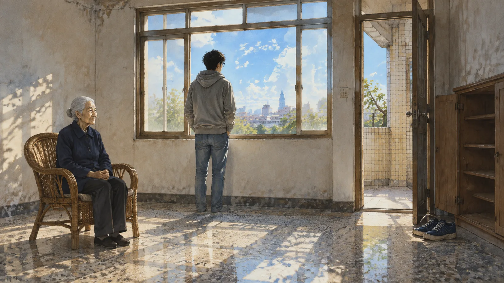
他在藤椅上睡著了。窗外是晴的，很晴，颱風走了，天藍得像洗過。他站起來，走到窗邊，往外看。巷子裡的地是濕的，可是在乾。對面公寓的牆上有陽光。
他回頭看客廳。
藤椅。就只有藤椅。紅色水壺不見了。吉他不見了。他走到大房間，筆記型電腦不見了。陽台，腳踏車不見了。廚房，電鍋不見了。浴室，粉紅色的浴巾不見了。書架，植物，外套，高跟鞋，全部不見了。
他走到玄關，看鞋櫃。
鞋櫃是空的。他的藍色球鞋放在門口的地上，跟他搬進來的第一天一樣。
他拿出手機，打開那則廣告。
「此物件已下架。」
他看著那一行字，看了很久。然後他往下捲，看刊登紀錄。最後一次更新：二〇二三年七月四日，凌晨三點三十四分。
三點三十四分。不是三十三。晚了一分鐘。
他不知道那一分鐘是什麼。可能是老太太把電話放下的時間。可能是她走到門口，打開門，看到門外沒有人——或者看到了什麼——的時間。可能是她把那則等了二十五年的廣告，親手撤掉的時間。
他把手機收起來。
樓下的鐵門響了。他走到窗邊往下看，二樓的太太提著菜籃走出來，抬頭看到他，愣了一下，然後揮了揮手。
「早。」她說，「三樓的？你昨天晚上有沒有聽到？很多人下樓，吵死了。」
「有。」程宇說。
「是誰啊？」
程宇想了一下。
「回家的人。」他說。
第十五章十一個
他花了一個月找他們。
林柏翰。新竹的那個女人，二〇二三年七月五日早上，接到一通電話。是她兒子。他說他在台北車站，他不知道自己為什麼在那裡，他不記得過去八年的事，可是他記得她的電話號碼。他說：媽，我回來了。
陳淑芬。台中人，二〇二一年來台北工作，二〇二二年失蹤。七月五日，她的室友在她們以前租的房子門口看到她，坐在樓梯上，穿著那件外套，說她忘了鑰匙在哪裡。
小恩。八歲的男孩，二〇一六年跟母親搬進那間公寓，母親說他「回外婆家了」，然後母親也不見了。七月五日，外婆在自家門口看到一個八歲的男孩，牽著一台沒氣的腳踏車。他還是八歲。他的母親沒有回來。
程宇找到了九個。九個人，在七月五日的早上，出現在他們各自的「家」門口。他們不記得中間發生的事，不記得那間公寓，不記得雨。他們只記得自己說過要回家。
還有兩個，他找不到。一雙登山鞋，一雙皮靴。沒有名字，沒有線索。他不知道他們是誰，不知道他們回去了沒有，不知道他們有沒有家可以回。
他在表格的最後兩行寫了「不明」。
然後他關掉表格。
✦
八月，他搬走了。
不是因為害怕。房子很安靜，很乾，陽光很好，八千塊。他住了兩個月，是他這三年來睡得最好的兩個月。他搬走是因為房東——真正的房東，鄭志誠，透過一個律師——決定把房子賣了。律師說鄭先生不打算回台北，房子放著也是放著。
程宇搬走的前一天，把整間房子打掃了一遍。磨石子地板，木頭窗框，天花板的壁癌。他站在客廳，看著那張藤椅。他想把它帶走，可是他覺得不應該。它是等人的椅子。它應該留在這裡。
他關上門，下樓。樓梯間的燈亮了三十秒，滅了。
尾聲
阿凱是在九月問他的。
他們在公司樓下的便利商店吃午餐，跟三個月前一樣。程宇看起來好多了，阿凱說，你終於像個活人了。
「那間房子，」阿凱說，「到底是怎麼回事？」
程宇想了一下。
「一個等人的地方。」他說，「等太久了，就把每一個進去的人都當成她在等的那個人。」
「那你怎麼出來的？」
「我跟她說，我回來了。」
阿凱看著他。
「你騙她？」
「不算。」程宇說，「我媽也等過我爸。等了幾年，然後不等了。她不等了的那一天，跟我說：好了，我們自己過。我那時候十三歲。我一直覺得那句話是說給我聽的。」
「不是嗎？」
「是說給她自己聽的。」程宇說，「一個人要停止等，需要有人跟她說『可以了』。誰說都可以。」
阿凱沒有再問。他們吃完午餐，回公司。
那天晚上，程宇在整理手機的照片。他要清掉一些，手機快滿了。他從最新的往前刪，刪到六月，刪到那間公寓。
他停下來。
有一張照片。是他搬進去第五天拍的，客廳，藤椅旁邊有一個紅色的水壺。他記得這張。
可是照片裡的客廳，不是他記得的那個客廳。
窗外在下雨。玻璃上有水痕。玄關的鞋櫃是開的。鞋櫃裡整整齊齊地排著鞋子。他把照片放大，一雙一雙地數。
十二雙。
最下面一格，是一雙藍色的球鞋。
他看著那張照片，看了很久。然後他往下看，看照片的拍攝資訊。
拍攝日期：二〇二三年七月四日。凌晨三點三十四分。
他沒有拍過這張照片。
他把手機放下。窗外沒有下雨。房間裡很安靜。他聽了很久，什麼都沒有。沒有雨聲，沒有腳步聲，沒有人在等。
他把照片留下來了。沒有刪。
他想，總要有人記得，那間房子裡，曾經有人等過。
（完）
留言板
看不懂、想補充、發現錯誤都歡迎留言；填個暱稱就能發。